Лабораторная работа 1. Реализация серверного приложения FastAPI
Тема: Разработка веб-приложения для поиска партнеров в путешествие.
Задача - создать веб-приложение, которое поможет людям находить партнеров для совместных путешествий. Приложение должно предоставлять возможность пользователям находить попутчиков для конкретных путешествий, обмениваться информацией о планируемых поездках и обсуждать детали маршрута. Функционал веб-приложения должен включать следующее:
- Создание профилей: Возможность пользователям создавать профили, указывать информацию о себе, своих навыках, опыте работы и предпочтениях по проектам.
- Создание поездок: Возможность пользователям создавать объявления о планируемых поездках с указанием дат, маршрута, предполагаемой длительности и других деталей.
- Поиск попутчиков: Функционал поиска попутчиков для конкретных поездок на основе заданных критериев, таких как место отправления, место назначения, даты и т.д.
- Управление поездками: Возможность управления созданными поездками, включая добавление/изменение деталей, отмену поездки и т.д.
Модели
Критерии модели данных:
- 5 или больше таблиц
- Связи many-to-many и one-to-many
- Ассоциативная сущность должна иметь поле, характеризующее связь, помимо ссылок на связанные таблицы
В модели данных есть 4 основных сущности:
- Пользователь (User)
- Поездки (Trips)
- Профессии (Professions)
- Навыки (Skills)
В отдельный файл schemas.py были вынесены модели для запросов и ответов сервера.
models.py
from typing import Optional, List
import datetime
from sqlmodel import SQLModel, Field, Relationship
class TripUserLink(SQLModel, table=True):
trip_id: int = Field(default=None, foreign_key="trip.id", primary_key=True)
user_id: int = Field(default=None, foreign_key="user.id", primary_key=True)
role: str = Field(default="passenger")
class SkillUserLink(SQLModel, table=True):
skill_id: int = Field(default=None, foreign_key="skill.id", primary_key=True)
user_id: int = Field(default=None, foreign_key="user.id", primary_key=True)
class TripDefault(SQLModel):
start_date: datetime.date
end_date: datetime.date
departure_place: str
arrival_place: str
description: str
class Trip(TripDefault, table=True):
id: int = Field(default=None, primary_key=True)
creator_id: int = Field(foreign_key="user.id")
creator: "User" = Relationship(back_populates="created_trips")
users: Optional[List["User"]] = Relationship(back_populates="trips", link_model=TripUserLink)
class ProfessionDefault(SQLModel):
title: str
description: Optional[str]
class Profession(ProfessionDefault, table=True):
id: int = Field(default=None, primary_key=True)
users_prof: List["User"] = Relationship(back_populates="profession")
class SkillDefault(SQLModel):
title: str
description: Optional[str]
class Skill(SkillDefault, table=True):
id: int = Field(default=None, primary_key=True)
users: Optional[List["User"]] = Relationship(back_populates="skills", link_model=SkillUserLink)
class UserDefault(SQLModel):
username: str
birth_date: datetime.date
description: Optional[str]
experience: int | None
profession_id: Optional[int] = Field(default=None, foreign_key="profession.id")
project_preferences: Optional[str] | None
class User(UserDefault, table=True):
id: int = Field(default=None, primary_key=True)
hashed_password: str
profession: Optional[Profession] = Relationship(back_populates="users_prof")
skills: Optional[List[Skill]] = Relationship(
back_populates="users",
link_model=SkillUserLink)
trips: Optional[List[Trip]] = Relationship(
back_populates="users", link_model=TripUserLink)
created_trips: List["Trip"] = Relationship(back_populates="creator")
class UserFull(UserDefault):
profession: Optional[Profession] = None
skills: Optional[List[Skill]] = None
trips: Optional[List[Trip]] = None
class UserSkills(UserDefault):
skills: Optional[List[Skill]] = None
schemas.py
from typing import Optional, List
import datetime
import pydantic
from typing_extensions import TypedDict
from sqlmodel import Field
from models import *
class AddSkillsRequest(pydantic.BaseModel):
skill_ids: List[int]
class AddTripRequest(pydantic.BaseModel):
trip_ids: List[int]
class ProfessionCreateResponse(TypedDict):
status: int
data: Profession
class UserCreateResponse(TypedDict):
status: int
data: User
class SkillCreateResponse(TypedDict):
status: int
data: Skill
class TripCreateResponse(TypedDict):
status: int
data: Trip
class UserCreateRequest(pydantic.BaseModel):
username: str = pydantic.Field(..., min_length=3, max_length=50)
password: str = pydantic.Field(..., min_length=8)
birth_date: datetime.date
description: Optional[str] = None
experience: Optional[int] = None
profession_id: Optional[int] = None
project_preferences: Optional[str] = None
class LoginRequest(pydantic.BaseModel):
username: str
password: str
class ChangePasswordRequest(pydantic.BaseModel):
old_password: str
new_password: str = Field(..., min_length=8)
confirm_password: str
API
Логика была разделена на 5 модулей, для каждого создан отдельный роутер.
В файле main.py происходит инициализация приложения и решистрация роутеров.
main.py
from connection import init_db, create_database
from fastapi import FastAPI
from routers import auth, skills, professions, trips, users
app = FastAPI()
@app.on_event("startup")
def on_startup():
create_database()
init_db()
@app.get("/")
def hello():
return "Hello, [username]!"
app.include_router(auth.router, prefix="/api/auth", tags=["Authentication"])
app.include_router(users.router, prefix="/api/users", tags=["Users"])
app.include_router(skills.router, prefix="/api/skills", tags=["Skills"])
app.include_router(trips.router, prefix="/api/trips", tags=["Trips"])
app.include_router(professions.router, prefix="/api/professions", tags=["Professions"])
1) Authentication - эндпоинты связанные с регистрацией пользователя и входом.
routers/auth.py
from connection import get_session
from security import hash_password, verify_password, create_access_token
from fastapi import HTTPException, Depends, APIRouter
from sqlmodel import Session, select
from models import *
from schemas import *
router = APIRouter()
@router.post("/register")
def register(user_data: UserCreateRequest, db: Session = Depends(get_session)):
h_password = hash_password(user_data.password)
new_user = User(
username=user_data.username,
hashed_password=h_password,
birth_date=user_data.birth_date,
description=user_data.description,
experience=user_data.experience,
profession_id=user_data.profession_id
)
db.add(new_user)
db.commit()
db.refresh(new_user)
return {"status": "ok", "user_id": new_user.id}
@router.post("/login")
def login(form_data: LoginRequest, db: Session = Depends(get_session)):
statement = select(User).where(User.username == form_data.username)
user = db.exec(statement).first()
if not user or not verify_password(form_data.password, user.hashed_password):
raise HTTPException(status_code=400, detail="Incorrect username or password")
access_token = create_access_token(data={"sub": user.username})
return {"access_token": access_token, "token_type": "bearer"}
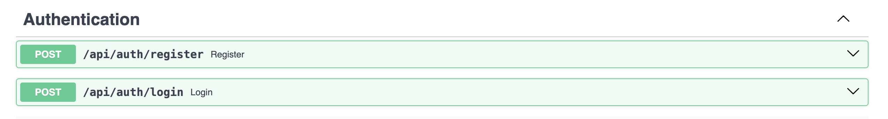
2) Users - эндпоинты связанные с пользователем
routers/users.py
from sqlalchemy import select
from sqlalchemy.orm import selectinload
from connection import init_db, create_database, get_session
from security import hash_password, verify_password, create_access_token, get_current_user
from fastapi import FastAPI, HTTPException, Depends
from sqlmodel import Session, select, col
from fastapi import APIRouter
from models import *
from schemas import *
router = APIRouter()
@router.post("/")
def users_create(user: UserDefault,
session=Depends(get_session)) -> UserCreateResponse:
user = User.model_validate(user)
session.add(user)
session.commit()
session.refresh(user)
return UserCreateResponse(status=200, data=user)
@router.get("/me")
def read_users_me(current_user: User = Depends(get_current_user)):
return current_user
@router.get("/list")
def users_list(session=Depends(get_session)) -> List[UserFull]:
return session.exec(select(User)).all()
@router.get("/{user_id}", response_model=UserFull)
def users_get(user_id: int, session=Depends(get_session)) -> User:
return session.get(User, user_id)
@router.delete("/delete/{user_id}")
def users_delete(user_id: int, session=Depends(get_session)):
user = session.get(User, user_id)
if not user:
raise HTTPException(status_code=404, detail="user not found")
session.delete(user)
session.commit()
return {"ok": True}
@router.patch("/{user_id}")
def users_update(user_id: int,
user: UserDefault,
session=Depends(get_session)) -> UserDefault:
db_user = session.get(User, user_id)
if not db_user:
raise HTTPException(status_code=404, detail="user not found")
user_data = user.dict(exclude_unset=True)
for key, value in user_data.items():
setattr(user_data, key, value)
session.add(db_user)
session.commit()
session.refresh(db_user)
return db_user
@router.post("/{user_id}/skills", response_model=UserFull)
def add_skills_to_user(
user_id: int,
request: AddSkillsRequest,
session: Session = Depends(get_session)
):
statement = (
select(User)
.where(User.id == user_id)
.options(selectinload(User.skills))
)
results = session.exec(statement)
db_user = results.first()
if not db_user:
raise HTTPException(status_code=404, detail="user not found")
skills_statement = select(Skill).where(col(Skill.id).in_(request.skill_ids))
db_skills = session.exec(skills_statement).all()
if not db_skills:
raise HTTPException(status_code=404, detail="skills not found")
for skill in db_skills:
if skill not in db_user.skills:
db_user.skills.append(skill)
session.add(db_user)
session.commit()
session.refresh(db_user)
return db_user
@router.post("/{user_id}/trips", response_model=UserFull)
def add_trips_to_user(
user_id: int,
request: AddTripRequest,
session: Session = Depends(get_session)
):
statement = (
select(User)
.where(User.id == user_id)
.options(selectinload(User.trips))
)
results = session.exec(statement)
db_user = results.first()
if not db_user:
raise HTTPException(status_code=404, detail="user not found")
trips_statement = select(Trip).where(col(Trip.id).in_(request.trip_ids))
db_trips = session.exec(trips_statement).all()
if not db_trips:
raise HTTPException(status_code=404, detail="trip not found")
for trip in db_trips:
if trip not in db_user.trips:
db_user.trips.append(trip)
session.add(db_user)
session.commit()
session.refresh(db_user)
return db_user
@router.patch("/me/change-password")
def change_password(
data: ChangePasswordRequest,
session: Session = Depends(get_session),
current_user: User = Depends(get_current_user)
):
if not verify_password(data.old_password, current_user.hashed_password):
raise HTTPException(
status_code=status.HTTP_400_BAD_REQUEST,
detail="Неверный текущий пароль"
)
if data.new_password != data.confirm_password:
raise HTTPException(
status_code=status.HTTP_400_BAD_REQUEST,
detail="Новые пароли не совпадают"
)
if data.old_password == data.new_password:
raise HTTPException(
status_code=400,
detail="Новый пароль не может совпадать со старым"
)
current_user.hashed_password = hash_password(data.new_password)
session.add(current_user)
session.commit()
session.refresh(current_user)
return {"message": "Пароль успешно изменен"}
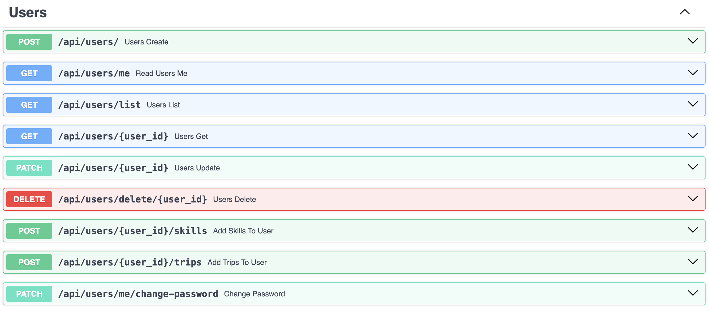
3) Skills
routers/skills.py
from sqlalchemy import select
from connection import init_db, create_database, get_session
from fastapi import HTTPException, Depends
from sqlmodel import Session, select, col
from fastapi import APIRouter
from schemas import *
from models import *
router = APIRouter()
@router.get("/list")
def skills_list(session=Depends(get_session)) -> List[Skill]:
return session.exec(select(Skill)).all()
@router.get("/{skill_id}")
def skill_get(skill_id: int,
session=Depends(get_session)) -> Skill:
return session.get(Skill, skill_id)
@router.post("/")
def skill_create(skill: SkillDefault,
session=Depends(get_session)) -> SkillCreateResponse:
skill = Skill.model_validate(skill)
session.add(skill)
session.commit()
session.refresh(skill)
return SkillCreateResponse(status=201, data=skill)
@router.delete("/delete/{skill_id}")
def skill_delete(skill_id: int, session=Depends(get_session)):
skill = session.get(Skill, skill_id)
if not skill:
raise HTTPException(status_code=404, detail="skill not found")
session.delete(skill)
session.commit()
return {"ok": True}
@router.patch("/{skill_id}")
def skill_update(skill_id: int,
skill: Skill,
session=Depends(get_session)) -> Skill:
db_skill = session.get(Skill, skill_id)
if not db_skill:
raise HTTPException(status_code=404, detail="skill not found")
data = skill.dict(exclude_unset=True)
for key, value in data.items():
setattr(data, key, value)
session.add(data)
session.commit()
session.refresh(db_skill)
return db_skill
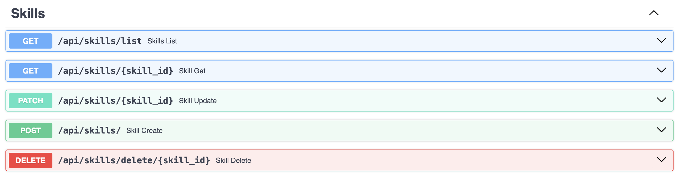
4) Trips - управление поездками
routers/trips.py
from sqlalchemy import select
from connection import get_session
from fastapi import HTTPException, Depends
from sqlmodel import Session, select
from fastapi import APIRouter, Query
from security import get_current_user
from schemas import *
from models import *
router = APIRouter()
@router.get("/list")
def trips_list(session=Depends(get_session)) -> List[Trip]:
return session.exec(select(Trip)).all()
@router.get("/{trip_id}")
def trip_get(trip_id: int,
session=Depends(get_session)) -> Trip:
return session.get(Trip, trip_id)
@router.post("/")
def trip_create(trip_in: TripDefault,
session=Depends(get_session),
current_user: User = Depends(get_current_user)) -> TripCreateResponse:
trip_data = trip_in.model_dump()
trip_data["creator_id"] = current_user.id
db_trip = Trip.model_validate(trip_data)
session.add(db_trip)
session.commit()
session.refresh(db_trip)
return TripCreateResponse(status=201, data=db_trip)
@router.delete("/delete/{trip_id}")
def trip_delete(trip_id: int,
session=Depends(get_session),
current_user: User = Depends(get_current_user)):
trip = session.get(Trip, trip_id)
if not trip:
raise HTTPException(status_code=404, detail="trip not found")
if trip.creator_id != current_user.id:
raise HTTPException(status_code=403, detail="forbidden")
session.delete(trip)
session.commit()
return {"ok": True}
@router.patch("/{trip_id}")
def trip_update(trip_id: int,
session=Depends(get_session),
current_user: User = Depends(get_current_user)) -> Trip:
db_trip = session.get(Trip, trip_id)
if not db_trip:
raise HTTPException(status_code=404, detail="trip not found")
if db_trip.creator_id != current_user.id:
raise HTTPException(status_code=403, detail="forbidden")
data = db_trip.dict(exclude_unset=True)
for key, value in data.items():
setattr(data, key, value)
session.add(data)
session.commit()
session.refresh(db_trip)
return db_trip
@router.get("/search", response_model=List[Trip])
def search_trips(departure: Optional[str] = Query(None),
arrival: Optional[str] = Query(None),
start_date: Optional[datetime.date] = Query(None),
end_date: Optional[datetime.date] = Query(None),
db: Session = Depends(get_session)) -> List[Trip]:
statement = select(Trip)
if departure:
statement = statement.where(Trip.departure_place == departure)
if arrival:
statement = statement.where(Trip.arrival_place == arrival)
if start_date:
statement = statement.where(Trip.start_date == start_date)
if end_date:
statement = statement.where(Trip.end_date == end_date)
results = db.exec(statement).all()
return results
@router.delete("/{trip_id}/leave")
def leave_trip(
trip_id: int,
db: Session = Depends(get_session),
current_user: User = Depends(get_current_user)
):
statement = select(TripUserLink).where(
TripUserLink.trip_id == trip_id,
TripUserLink.user_id == current_user.id
)
link = db.exec(statement).first()
if not link:
raise HTTPException(status_code=404, detail="Вы не являетесь участником этой поездки")
db.delete(link)
db.commit()
return {"message": "Вы успешно покинули поездку"}
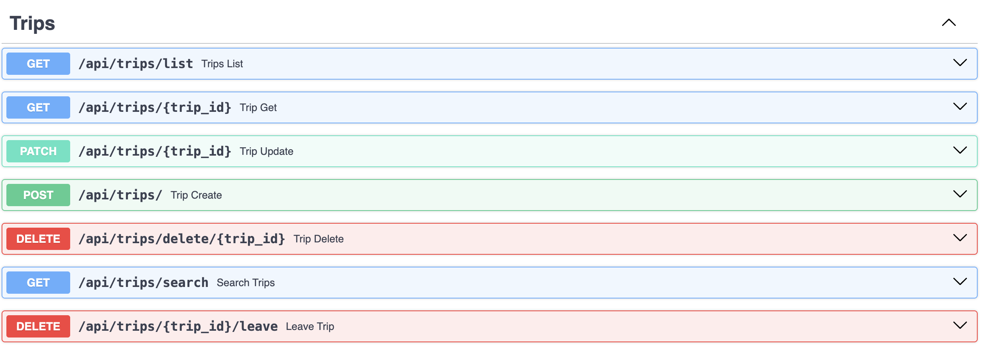
5) Professions
routers/professions.py
from sqlalchemy import select
from connection import get_session
from fastapi import HTTPException, Depends, APIRouter
from sqlmodel import Session, select, col
from schemas import *
from models import *
router = APIRouter()
@router.get("/list")
def profession_list(session=Depends(get_session)) -> List[Profession]:
return session.exec(select(Profession)).all()
@router.get("/{profession_id}")
def professions_get(profession_id: int,
session=Depends(get_session)) -> Profession:
return session.get(Profession, profession_id)
@router.post("/")
def profession_create(prof: ProfessionDefault,
session=Depends(get_session)) -> ProfessionCreateResponse:
prof = Profession.model_validate(prof)
session.add(prof)
session.commit()
session.refresh(prof)
return ProfessionCreateResponse(status=201, data=prof)
@router.delete("/delete/{profession_id}")
def professions_delete(profession_id: int, session=Depends(get_session)):
profession = session.get(Profession, profession_id)
if not profession:
raise HTTPException(status_code=404, detail="profession not found")
session.delete(profession)
session.commit()
return {"ok": True}
@router.patch("/{profession_id}")
def professions_update(profession_id: int,
profession: Profession,
session=Depends(get_session)) -> Profession:
db_profession = session.get(Profession, profession_id)
if not db_profession:
raise HTTPException(status_code=404, detail="profession not found")
profession_data = profession.dict(exclude_unset=True)
for key, value in profession_data.items():
setattr(profession_data, key, value)
session.add(profession_data)
session.commit()
session.refresh(db_profession)
return db_profession
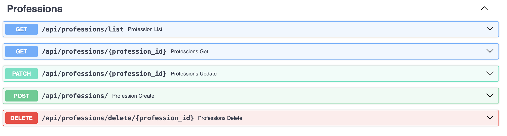
Соединение с БД
Соединение происходит через файл connection.py. Также там создается БД, если ее не существует.
connection.py
from sqlmodel import SQLModel, Session, create_engine
import psycopg2
from psycopg2.extensions import ISOLATION_LEVEL_AUTOCOMMIT
import os
from dotenv import load_dotenv
load_dotenv()
DB_USER = os.getenv("DB_USER", "postgres")
DB_PASS = os.getenv("DB_PASS","db")
DB_HOST = os.getenv("DB_HOST", "localhost")
DB_NAME = os.getenv("DB_NAME", "trips")
db_url = f'postgresql+psycopg2://{DB_USER}:{DB_PASS}@{DB_HOST}/{DB_NAME}'
engine = create_engine(db_url)
def create_database():
conn = psycopg2.connect(
dbname='postgres',
user=DB_USER,
password=DB_PASS,
host=DB_HOST
)
conn.set_isolation_level(ISOLATION_LEVEL_AUTOCOMMIT)
cursor = conn.cursor()
try:
cursor.execute(f"CREATE DATABASE {DB_NAME}")
print(f"База данных {DB_NAME} успешно создана!")
except psycopg2.errors.DuplicateDatabase:
print(f"База данных {DB_NAME} уже существует.")
finally:
cursor.close()
conn.close()
def init_db():
SQLModel.metadata.create_all(engine)
def get_session():
with Session(engine) as session:
yield session
Аутентификацию по JWT-токену
Реализованна в файле security.py
security.py
from fastapi import Request, Depends, HTTPException, status
from jose import JWTError, jwt
from passlib.context import CryptContext
from sqlmodel import Session, select
import os
from connection import get_session
from models import *
SECRET_KEY = os.getenv("SECRET_KEY", "key")
ALGORITHM = "HS256"
ACCESS_TOKEN_EXPIRE_MINUTES = 30
pwd_context = CryptContext(schemes=["bcrypt"], deprecated="auto")
def hash_password(password: str):
return pwd_context.hash(password)
def verify_password(plain_password, hashed_password):
return pwd_context.verify(plain_password, hashed_password)
def create_access_token(data: dict):
to_encode = data.copy()
expire = datetime.datetime.utcnow() + datetime.timedelta(minutes=ACCESS_TOKEN_EXPIRE_MINUTES)
to_encode.update({"exp": expire})
return jwt.encode(to_encode, SECRET_KEY, algorithm=ALGORITHM)
async def get_current_user(request: Request, db: Session = Depends(get_session)):
auth_header = request.headers.get("Authorization")
if not auth_header:
raise HTTPException(
status_code=status.HTTP_401_UNAUTHORIZED,
detail="Missing Authorization Header"
)
try:
scheme, token = auth_header.split()
if scheme.lower() != "bearer":
raise ValueError("Invalid scheme")
payload = jwt.decode(token, SECRET_KEY, algorithms=[ALGORITHM])
username: str = payload.get("sub")
if username is None:
raise HTTPException(status_code=401, detail="Invalid token")
except (ValueError, JWTError):
raise HTTPException(
status_code=status.HTTP_401_UNAUTHORIZED,
detail="Could not validate credentials",
)
statement = select(User).where(User.username == username)
user = db.exec(statement).first()
if user is None:
raise HTTPException(status_code=401, detail="User not found")
return user
Работа приложения
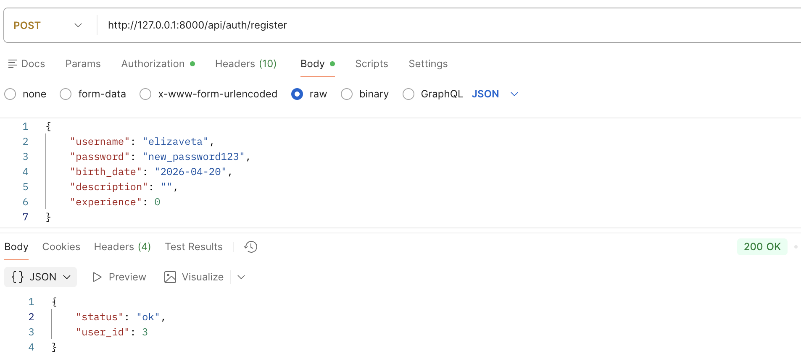
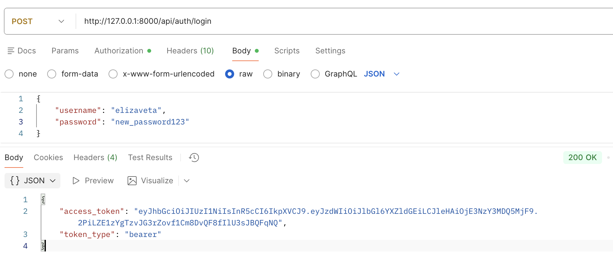
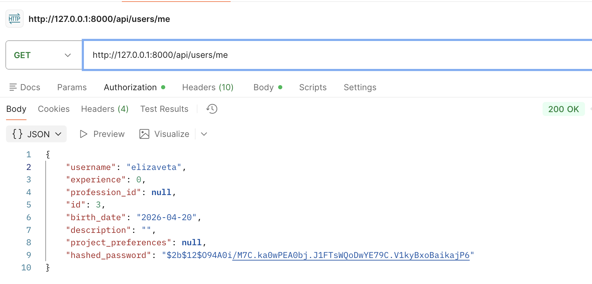
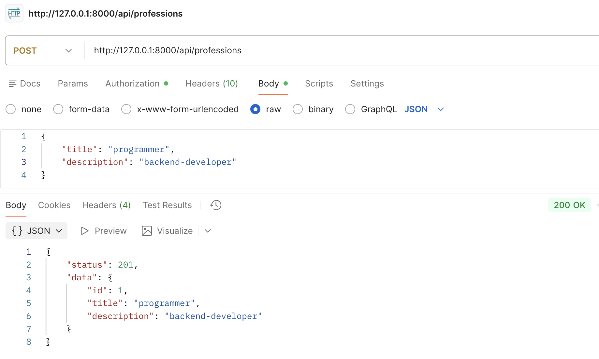
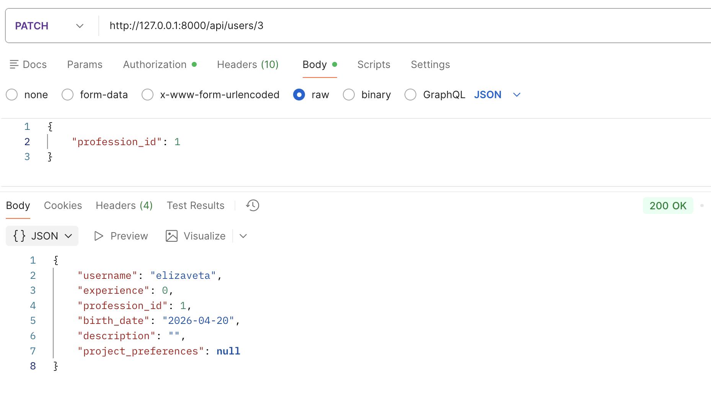
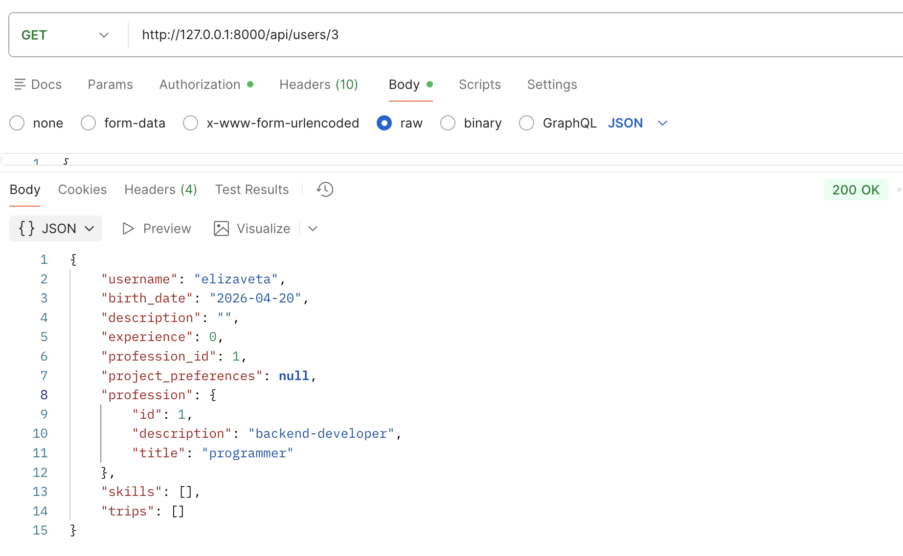
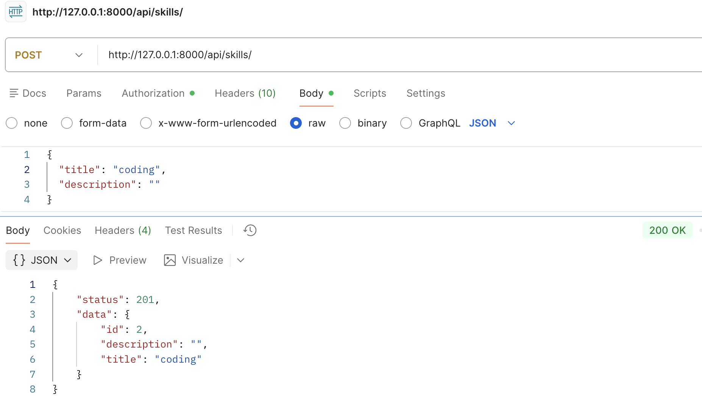
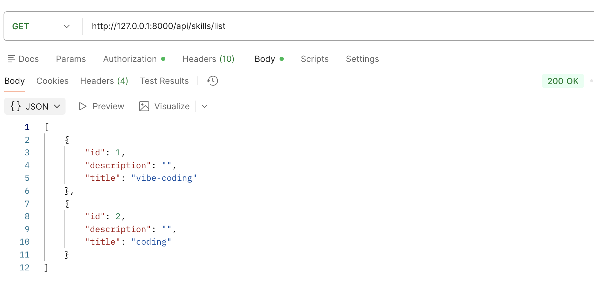
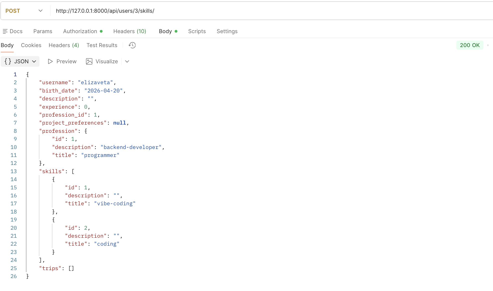
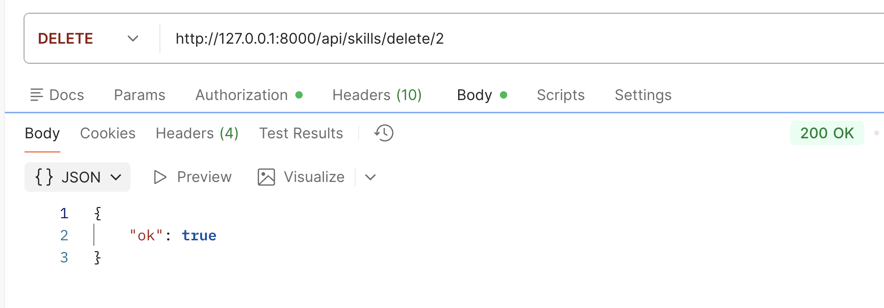
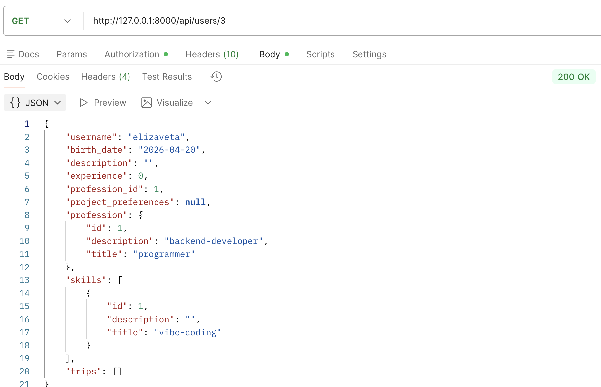
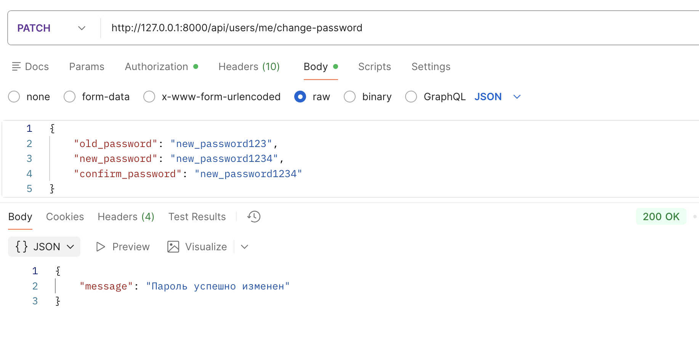
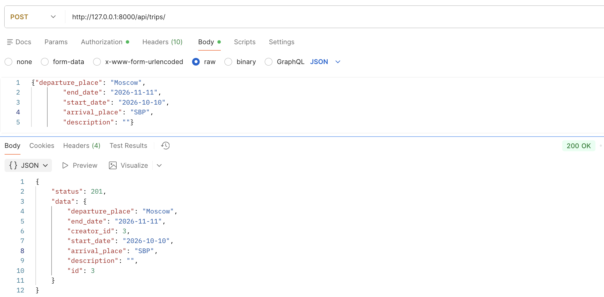
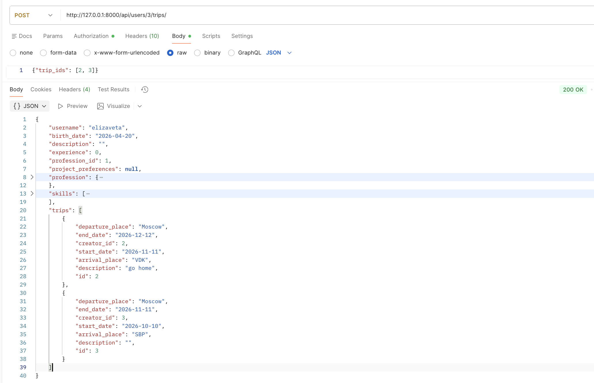
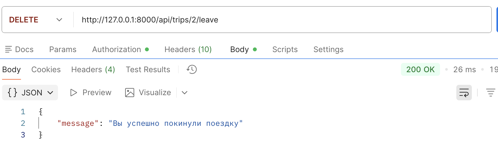